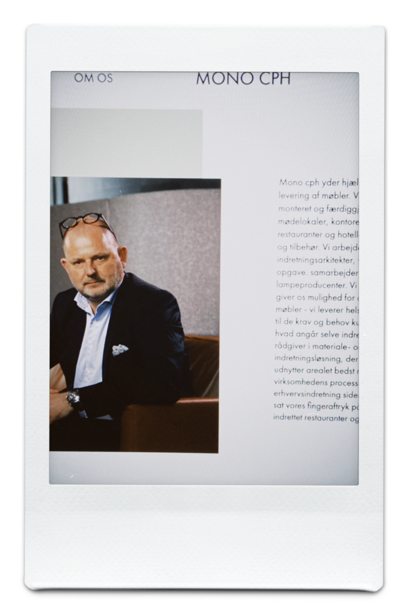

Grundlaeggende Indhold

I Tema 5 var vore mål, at lave et redesign og en forbedret brugeroplevelse af møbelforretningen Mono cph's hjemmeside. Min primære rolle var, at programmere en ny "Producenter" side til sitet, samt stod jeg for billede producering og billede redigering. Dette udførte jeg ved hjælp af mit Canon kamera, og efterfølgende benytte mig af Photoshop. Hele projektet lærte mig vigtigheden af gruppearbejde, og det at bruge hinanden som hjælpemiddel. En anden vigtig del af forløbet, var introduktionen til videoproduktion og hele processen fra ende til anden.